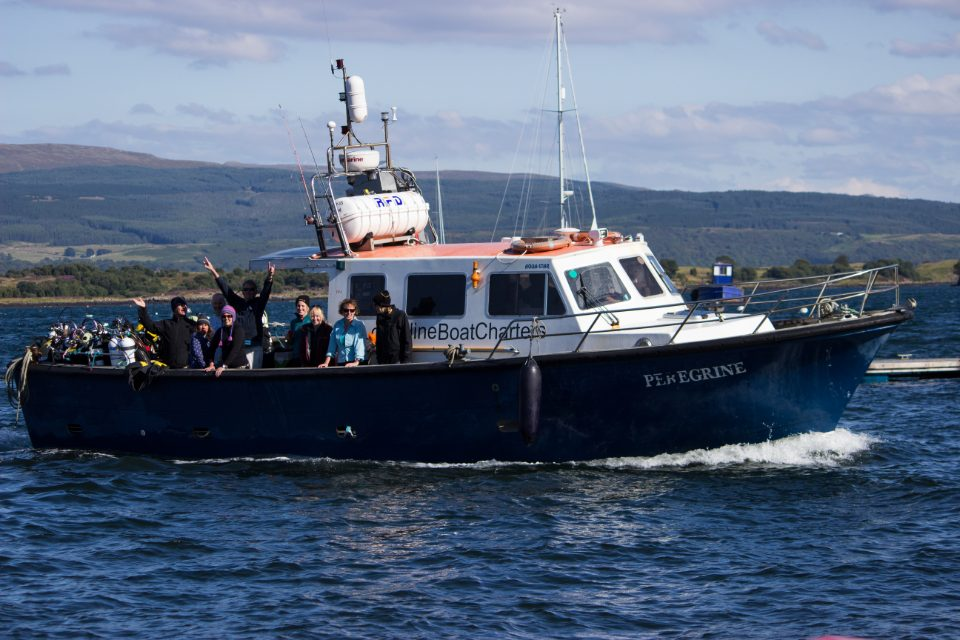
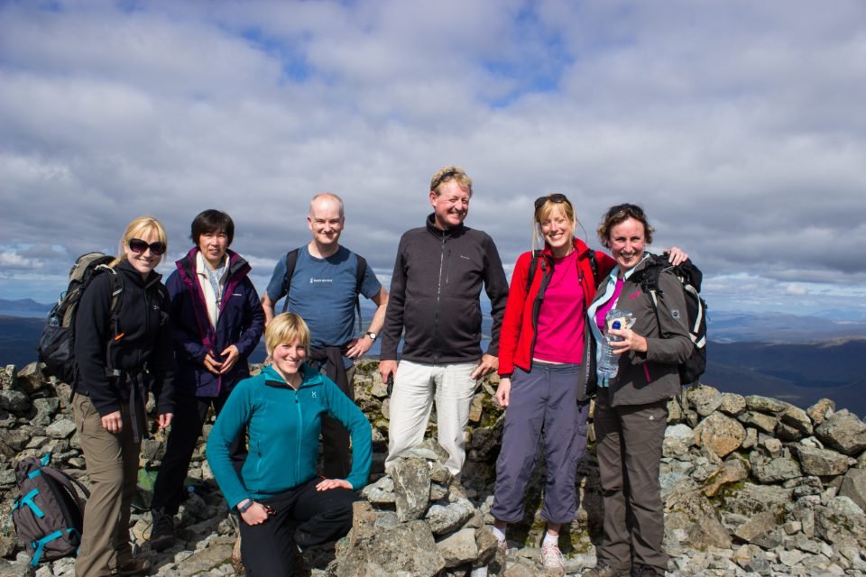
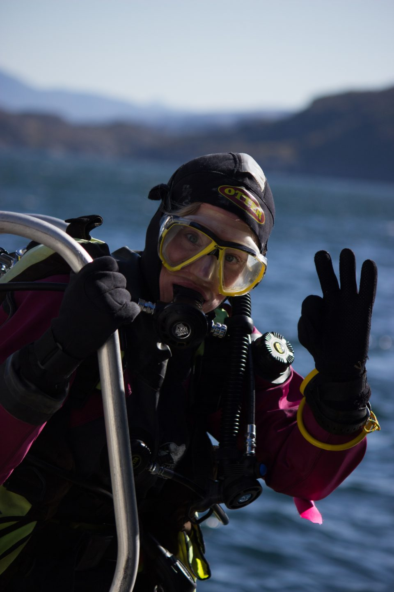
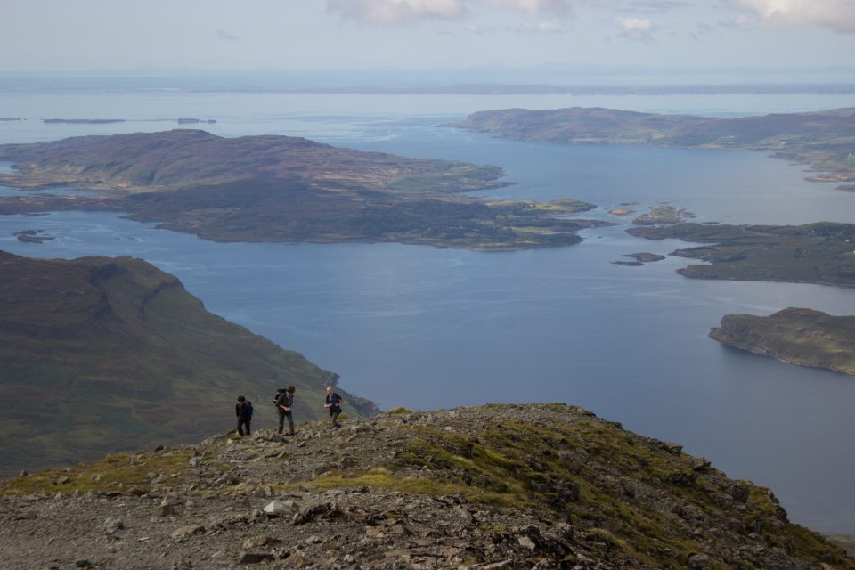

Mull, Scotland, 2014

Emily finds diving off the west coast of Scotland just as beautiful as she remembers it.
It’s five years since I last dived off Mull. Then I was a relatively inexperienced sports diver in a wetsuit. These days I’m a slightly more experienced dive leader, although less hardy in the comfort of a dry suit. I have fantastic memories of that first trip to Mull, and it didn’t disappoint this time round.
We were blessed with the most perfect weather all week – sunshine and flat calm seas – which only added to the beauty of the area, both above and below the water. Some of us made the most of the weather and a free day the first day by climbing Ben More – the highest mountain on Mull. A first mountain for some, with stunning views of the island and across to Skye and the mainland. Although some knees didn’t recover from the descent all week…

We had a fantastic week’s diving a mix of wrecks and walls. There was so much life, including squat lobster, crabs, conger eels, wrasse, goby, cod, butterfish, sponges, fan worms, and lots anemones including jewel and plumose anemones.
Some of the highlights included:
- the Breda – with its hull covered in plumose anemones
- the Shuna – silty but atmospheric with lots of life
- the Rondo – pick your depth – 5m or 50!
- the Thessis with swim throughs and lots of pretty sponges.
My absolute favourite though was the Hispania which we were able to dive twice. It is completely covered with pink, peach and cream anemones. It looks like a pink furry wreck – and is very pretty. There is a lot of life on it – we managed to spot scorpionfish and lots of nudibranchs, as well as pollock, cuckoo wrasse and a small eel – amongst others. This is probably one of my favourite wreck dives ever!

We were lucky enough to have catering at our accommodation from the wonderful Jules and Jem, who cooked up delicious meals every evening, and made us great lunches for the boat. We also had time to explore the pretty town of Tobermory and the beautiful island of Mull with it sea eagles, seals, mountains and beaches.
All in all, an excellent week diving with great friends in a fabulous location!
